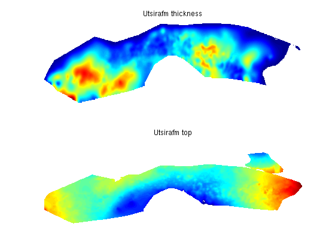
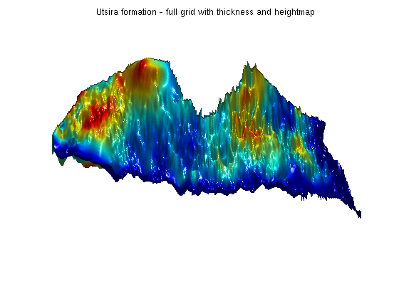

Contents
Give an overview of the CO2 atlas data.
In this example we show how one can employ MRST's CO2 module to analyse CO2 storage potential based on the data provided by Norwegian petroleum directorate http://www.npd.no/en/Publications/Reports/CO2-Storage-Atlas-/. The datasets are carefully described in both a short and a long report. It is recommended to have one of these reports at hand when experimenting with the data. The raw data provied by NPD can be obtained from their website in a GEOGRAPHICAL DATA (SHAPE- and RASTERFILES). For the sake of convenience we have converted the files to a ASCII format more suitable for our applications. These files can be inspected using any text editor.
We process the files and and get both the raw datasets and grdecl structs suitable for processGRDECL.
try require deckformat catch %#ok<CTCH> mrstModule add deckformat; end fprintf(1,'Loading atlas data (this may take a few minutes)..'); [grdecls, rawdata] = getAtlasGrid(); %#ok fprintf(1, 'done\n');
Loading atlas data (this may take a few minutes)..done
Description of raw data
Show the raw data. Each dataset contains four fields: - Name, which is the name of the formation - Variant: Either thickness or height, indicating wether the dataset represents height data or thickness data. - Data: The actual datasets as a matrix. - Meta: Metadata. The most interesting field here is the xllcorner/yllcorner variable which indicates the position in ED50 datum space.
disp 'Raw data:' for i=1:numel(rawdata); rd = rawdata{i}; fprintf('Dataset %-2i is %-12s (%-9s). Resolution: %4i meters\n', ... i, rd.name, rd.variant, rd.meta.cellsize) end % Store names for convenience names = cellfun(@(x) x.name, rawdata, 'UniformOutput', false)';
Raw data: Dataset 1 is Brentgrp (thickness). Resolution: 500 meters Dataset 2 is Brynefm (thickness). Resolution: 500 meters Dataset 3 is Cookfm (thickness). Resolution: 500 meters Dataset 4 is Dunlingp (top ). Resolution: 500 meters Dataset 5 is Fensfjordfm (thickness). Resolution: 500 meters Dataset 6 is Gassumfm (thickness). Resolution: 500 meters Dataset 7 is Gassumfm (top ). Resolution: 500 meters Dataset 8 is Huginfmeast (thickness). Resolution: 500 meters Dataset 9 is Huginfmwest (thickness). Resolution: 500 meters Dataset 10 is Johansenfm (thickness). Resolution: 500 meters Dataset 11 is Johansenfm (top ). Resolution: 200 meters Dataset 12 is Jurassicmid (top ). Resolution: 1000 meters Dataset 13 is Jurassic (top ). Resolution: 1000 meters Dataset 14 is Krossfjordfm (thickness). Resolution: 500 meters Dataset 15 is Paleocene (top ). Resolution: 1000 meters Dataset 16 is Pliocenesand (thickness). Resolution: 500 meters Dataset 17 is Pliocenesand (top ). Resolution: 500 meters Dataset 18 is Sandnesfm (thickness). Resolution: 500 meters Dataset 19 is Skadefm (thickness). Resolution: 500 meters Dataset 20 is Skadefm (top ). Resolution: 500 meters Dataset 21 is Sleipnerfm (thickness). Resolution: 500 meters Dataset 22 is Sognefjordfm (thickness). Resolution: 500 meters Dataset 23 is Statfjordfm (thickness). Resolution: 500 meters Dataset 24 is Statfjordfm (top ). Resolution: 500 meters Dataset 25 is Ulafm (thickness). Resolution: 500 meters Dataset 26 is Utsirafm (thickness). Resolution: 500 meters Dataset 27 is Utsirafm (top ). Resolution: 500 meters
Show the data directly
The data sets are perfectly usable for visualization on their own. To see this, we find the datasets corresponding to the Utsira formation and plot both the thickness and the heightmap.
Note that the datasets are not entirely equal: Some sections are not included in the thickness map and vice versa. In addition to this, the coordinates are not always overlapping, making interpolation neccessary.
Some formations are only provided as thickness maps; These are processed by sampling the relevant part of the Jurassic formation for top surface structure.
utsira_rd = rawdata(strcmpi(names, 'Utsirafm')); clf; for i = 1:numel(utsira_rd) urd = utsira_rd{i}; subplot(2,1,i) surf(urd.data) title([urd.name ' ' urd.variant]) shading interp view(0,90) axis tight off end
Create a grid by combining heightmaps and depths
The datasets are used to create interpolants which give both height and thickness on a fine grid. Any regions where the thickness/height is zero or not defined is removed, giving a GRDECL file defining the intersection of these datasets.
The call is coarsened by a factor 2: These grids can quickly become fairly large as they contain a lot of data. A full realization of this Utsira grid contains about 100k cells; By coarsening by 2 we end up with the more managable amount of 25k cells. The parameter nz determines the amount of fine cells in the logical k-direction and can be used to produce layered models for full simulations.
gr = getAtlasGrid('Utsirafm', 'coarsening', 2, 'nz', 1); % Process the grid G = processGRDECL(gr{1}); % The coarsening may disconnect small components, take only the largest and % first grid produced by processGRDECL and add geometry data to it. G = computeGeometry(G(1));
Plot the full grid
We plot the full grid, colorized by cell volumes. We also add a simple light to distinguish the oscillating surface of the reservoir. These oscillations can be a target for structural trapping of migrating CO2.
clf; plotCellData(G, G.cells.volumes) title('Utsira formation - full grid with thickness and heightmap') axis tight off light('Position',[-1 -1 -1],'Style','infinite'); lighting phong view(90,45)
Read all the formations
Again we read all the fine grids. We process all the grids to get proper grids with coordinates. The coarsening is useful here as we will only need the basic outline for the upcoming figure.
grdecls = getAtlasGrid('coarsening', 5); ng = numel(grdecls); grids = cell(ng,1); for i = 1:ng gd = processGRDECL(grdecls{i}); grids{i} = computeGeometry(gd(1)); end
Visualize all the formations
We then visualize the formations along with a map of Norway and point plots of all production wells in the Norwegian continental shelf.
The well data comes from the Norwegian Petroleum Directorate and can be found in more detail at http://factpages.npd.no/factpages/.
The map of Norway comes from The Norwegian Mapping and Cadastre Authority and can be found at http://www.kartverket.no/. Note that the map is only provided for scale and rough positioning - no claims are made regarding the accuracy in relation the subsea reservoirs.
clf; hold on for i=1:ng; G = grids{i}; % We want to colorize each grid differently data = repmat(i, G.cells.num, 1); plotCellData(grids{i}, data, 'facea', .3, 'edgea', .05, 'edgec', 'k'); end legend(cellfun(@(x) x.name, grdecls, 'UniformOutput', false), 'Location', 'EastOutside') box on view(2) set(gcf,'Color',[0.8 0.8 0.8]);set(gca,'Color',[0.8 0.8 0.8]); set(gca,'XColor',[0,0,0]) set(gca,'YColor',[0,0,0]);set(gca,'LineWidth',1) ax = axis(); colormap hsv % Load and plot a map load(fullfile(VEROOTDIR, 'data', 'atlas', 'norway.mat')); for k=1:length(norway), line(norway{k}(:,1) + 6.8e5, norway{k}(:,2)); end; axis(ax) hold on load(fullfile(VEROOTDIR, 'data', 'atlas', 'welldata.mat')); plot(welldata(:,2), welldata(:,1), '.k', 'MarkerSize', 5)